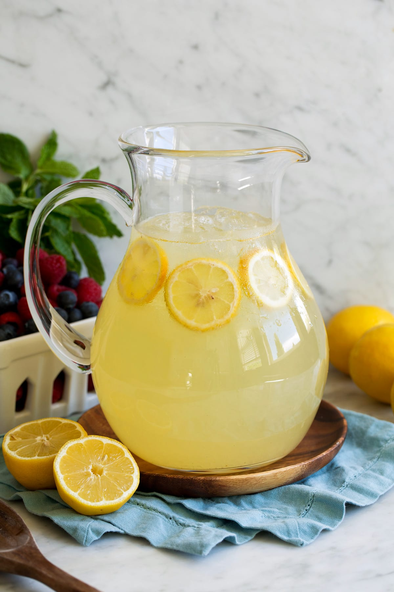

Refreshing Lemonade Drink Recipe

Description
You can't go wrong with a refreshing lemonade as your drink of choice. Although a classic and simple recipe, it's always worth sharing a delicious drink recipe, especially as summer approaches!
Ingredients
- 1 cup sugar
- 1 cup water
- 1 cup freshly squeezed lemon juice (4 to 6 medium lemons)
- 2-3 cups of cold water to dilute
Steps
- Create a simply syrup by combining sugar and water in a small saucepan and bringing it to a simmer over low heat. Stir until the sugar is completely dissolved and remove from the heat.
- Juice your lemons, 4 to 6 medium lemons should do the trick for 1 cup of juice but you may need more or less depending on the size of your lemons.
- Pour the juice and simple syrup into a serving pitcher.
- Add 2 to 3 cups of cold water to your pitcher to dilute and taste as needed.
- Optional: If your lemonade is too sweet, add lemon juice as needed.
Odin Recipes Home Page